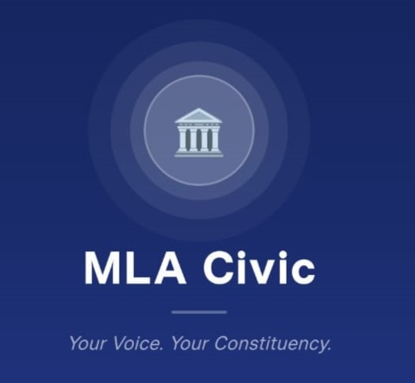
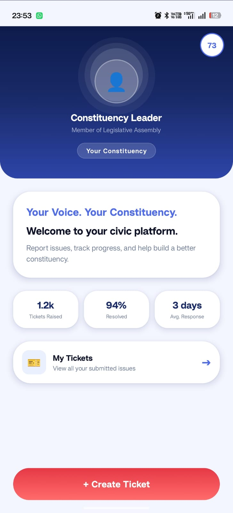
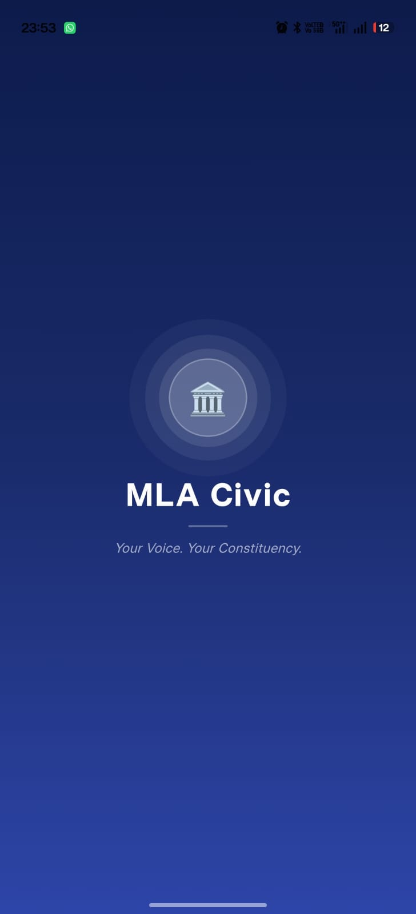
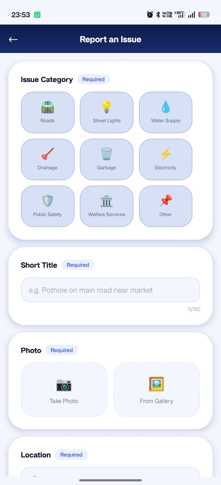
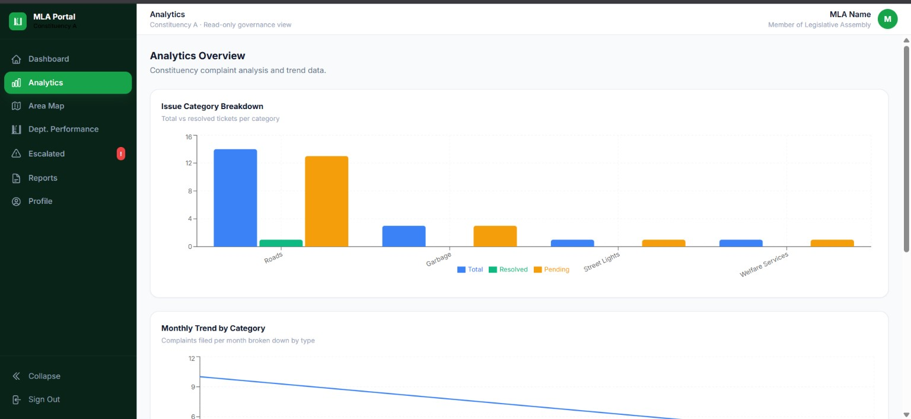
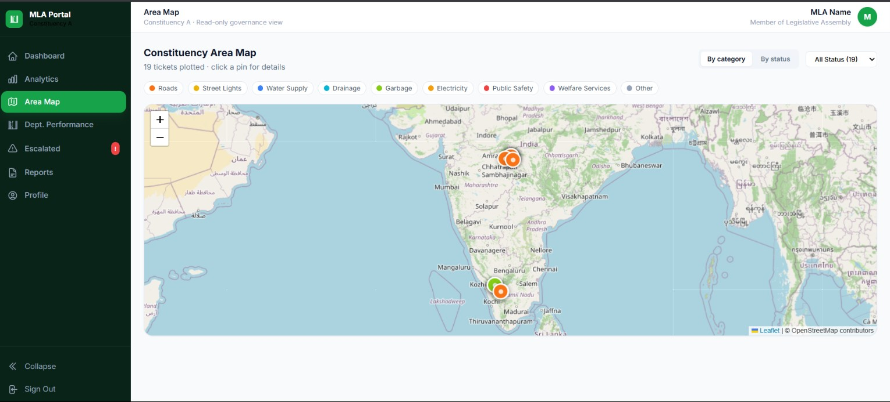

A centralized civic issue management platform connecting citizens, government staff, field technicians, and constituency leadership — from the first report to a verified resolution.

Citizens report local issues on camera and the government acts fast. MLA Civic brings that same public accountability to India.
Each role gets a purpose-built interface — while every ticket flows through a single, accountable system.
Report and track local civic issues in a few taps, secured by mobile + OTP login.
A clean administrative console to triage, assign, and resolve tickets efficiently.
Technicians see only their assigned work, with navigation and progress uploads.
Constituency-level oversight and analytics — not day-to-day ticket handling.
Real screens from the mobile application — branded to your constituency and built for a few-tap experience.

A branded splash carrying the tagline “Your Voice. Your Constituency.”
The MLA welcome, live stats, My Tickets, and a bold Create Ticket action.

Pick a category, add a title, attach a photo, and pin the GPS location.
A structured, accountable workflow where every hand-off is tracked and the citizen stays informed.
A read-only governance view for constituency leadership — complaint analytics, ward-level mapping, department performance and escalated issues.


Citizens use mobile + OTP; staff verified by official email and admin approval.
Every ticket carries a precise location and photo evidence for faster action.
Citizens are notified at submit, assign, progress, completion and closure.
Unresolved tickets unlock a “Request Escalation” option to protect citizens.
Spot high-frequency complaint areas and target resources where they matter.
A 1–5 star rating after closure keeps departments accountable to results.
A practical governance operations platform that can realistically be adopted at constituency level.
Bring citizens, staff, technicians and leadership onto one accountable platform — and turn every report into visible action.